Étudiante BUT Science des Données · IUT Villetaneuse
Samah Salhi

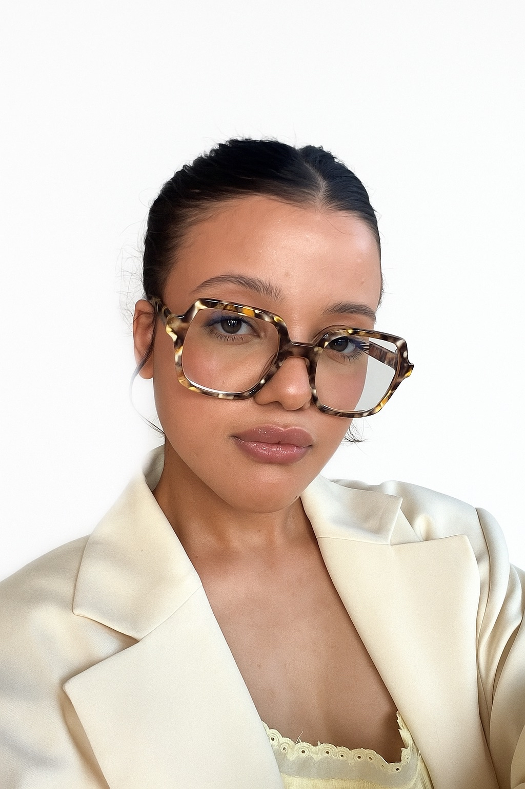


Je suis étudiante en 2ème année de BUT Science des Données à l'IUT de Villetaneuse (Université Sorbonne Paris Nord). À l'origine, je pensais m'orienter vers un parcours en management logistique des transports. C'est mon professeur au lycée qui m'a conseillé le BUT Science des Données, estimant que cette formation correspondait davantage à mon profil. En arrivant en BUT, j'ai dû m'adapter, notamment en mathématiques, car venant d'un bac STI2D, j'avais moins de bases théoriques que certains étudiants issus de filières générales. Les débuts ont demandé beaucoup de travail personnel, mais cette période m'a permis de développer mon autonomie et ma capacité d'adaptation.
J'aime particulièrement le travail d'analyse des données. J'apprécie le fait de partir de données brutes, de les nettoyer, de les structurer, puis de construire des graphiques pour en tirer des conclusions pertinentes. Comprendre un problème, interpréter les résultats et proposer des solutions concrètes est un aspect qui me motive beaucoup. Le travail en groupe est également important pour moi : j'aime échanger des idées, confronter les points de vue et expliquer les résultats obtenus.
Je souhaite devenir ingénieure ou spécialiste en intelligence artificielle, avec un intérêt particulier pour le machine learning et le traitement automatique du langage naturel (NLP). Ce qui m'attire dans ces domaines, ce sont les algorithmes et la capacité des modèles à apprendre à partir des données. J'apprécie également le fait que ce soit un domaine en constante évolution, où l'on doit continuellement se former et s'adapter.
Je compte poursuivre mes études après le BUT, en intégrant une école d'ingénieur spécialisée en data ou en machine learning, ou bien un master en intelligence artificielle. Je travaille également à renforcer mes compétences en programmation, en analyse de données et en modélisation statistique. Je m'investis dans mes projets universitaires et je cherche à progresser régulièrement afin de construire un parcours solide et cohérent.
Créer un tableau de bord pour le service communication de l'IUT afin d'analyser la typologie des étudiants (formation, lycée d'origine, mentions, bourse…).
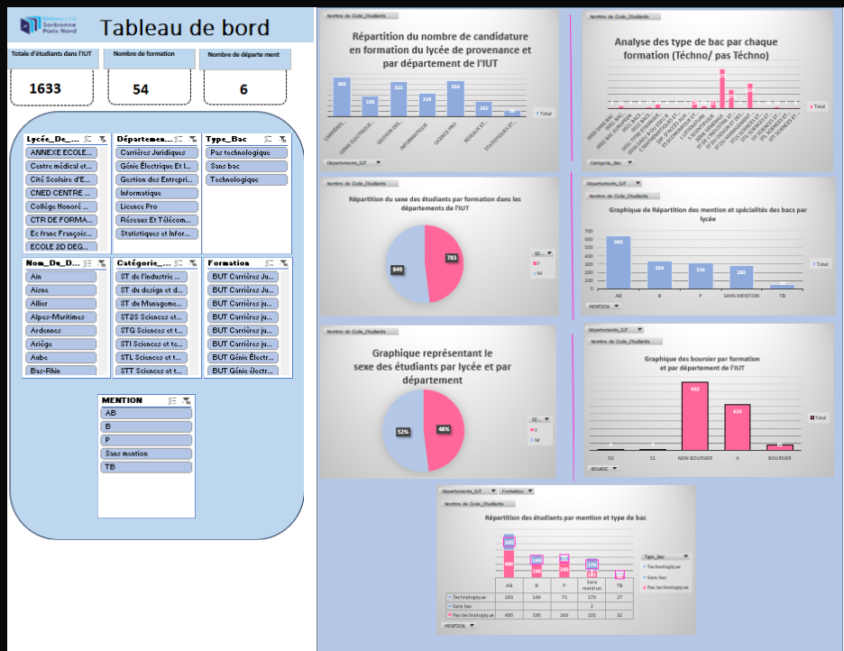
Concevoir une enquête sur les habitudes alimentaires des étudiants, récolter et analyser les résultats pour dégager des tendances.
Traiter des données clients extraites de fichiers bruts, identifier les incomplets et produire un rapport sur la répartition géographique.
Construire un modèle de régression logistique pour prédire si une tumeur est bénigne ou maligne à partir de variables cliniques.
Tirer des échantillons aléatoires sur 500 000 individus, estimer moyennes et proportions, construire des intervalles de confiance.
Installer PostgreSQL + Metabase, intégrer un fichier mondial sur les catastrophes climatiques et produire des visualisations via SQL.
Étudier la performance économique d'une entreprise maraîchère bio en circuit court à partir de ses documents comptables.
Étudier des données réelles sur les émissions de CO₂ par type de véhicule et produire une analyse statistique complète avec visualisations.
Modéliser et interroger une base de données relationnelle (données FMI) pour analyser le commerce international des technologies à faible empreinte carbone.
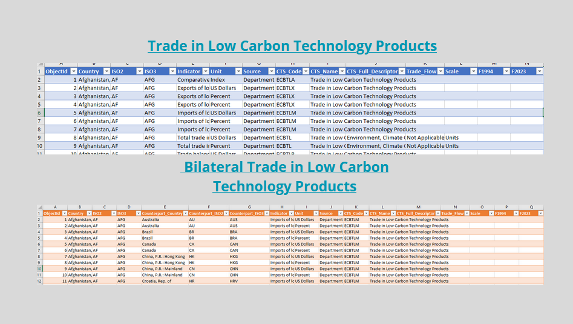
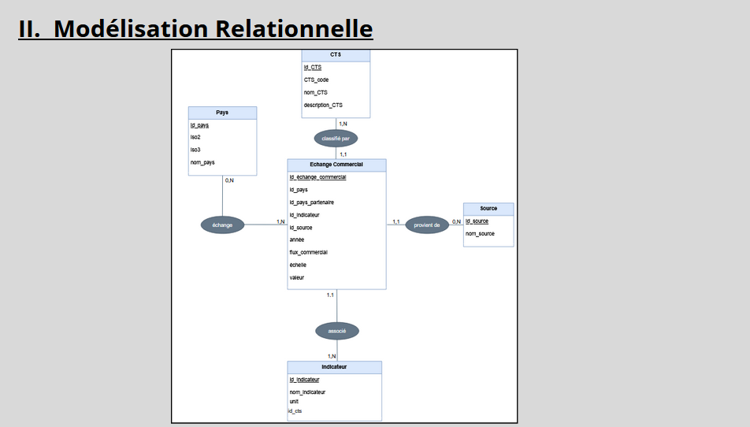
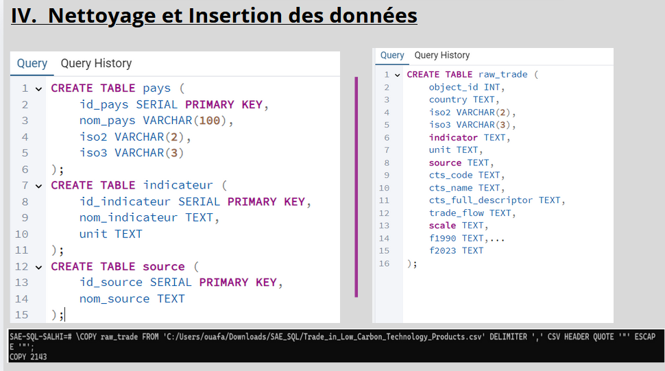
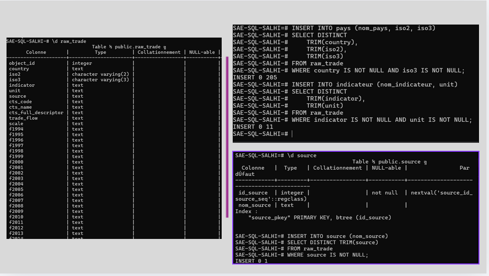
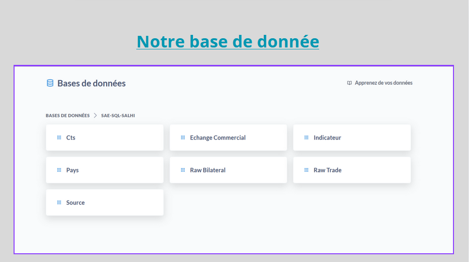
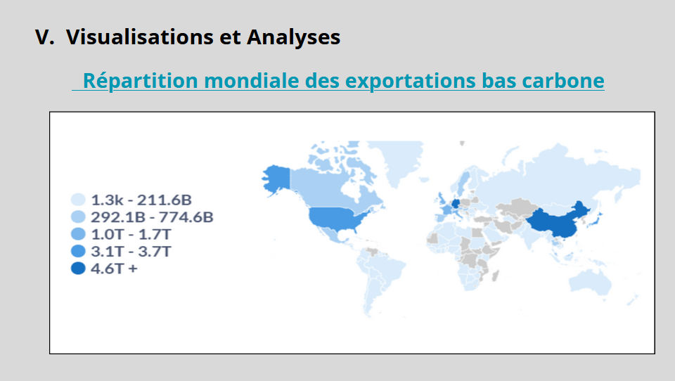
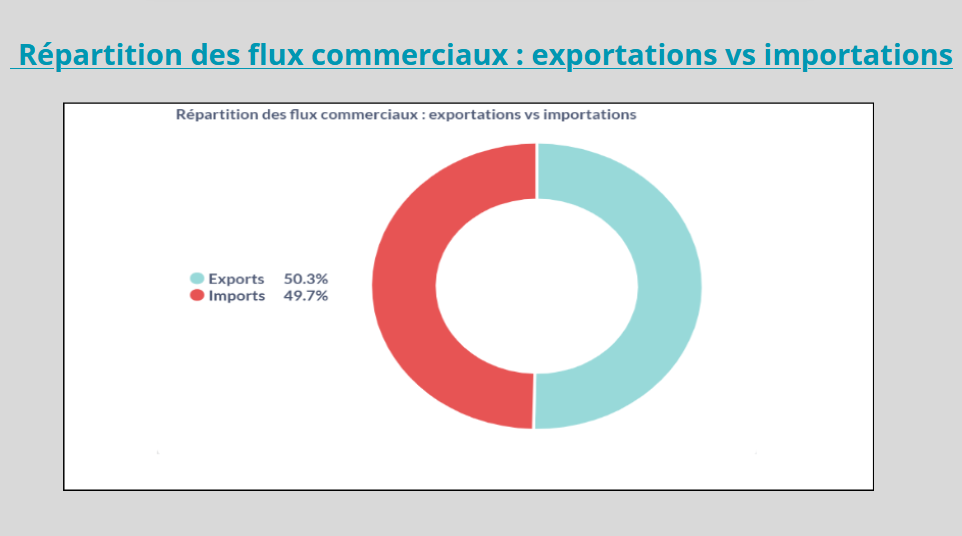
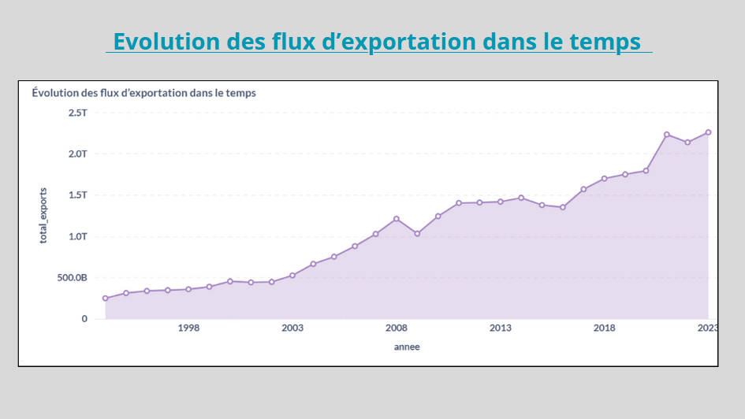
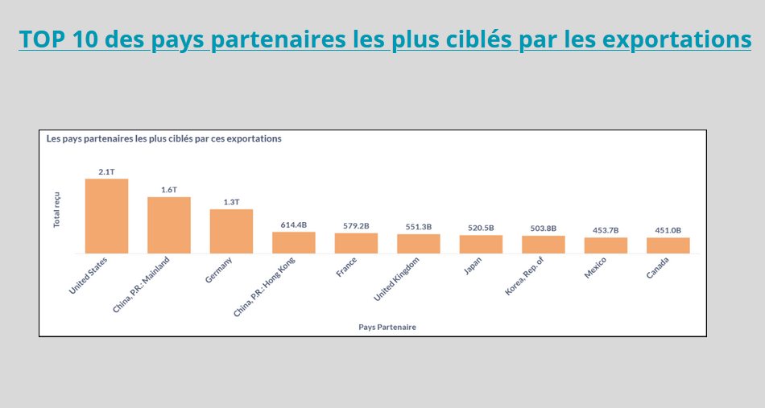
Dans quelle mesure l'utilisation de l'IA améliore-t-elle la préparation des étudiants au monde professionnel ? Nous avons travaillé sur 3 hypothèses à partir d'un jeu de données de 1050 répondants, nettoyé à 974 observations valides.

Comparer trois plans d'échantillonnage (simple, stratifié proportionnel, stratifié optimal) pour estimer l'âge moyen des mères à partir des données de naissances INSEE 2019, en utilisant l'âge du père comme variable auxiliaire.
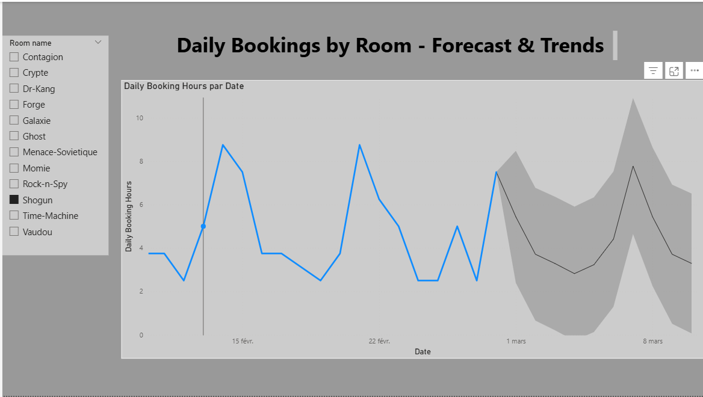
Projet réalisé en équipe internationale dans le cadre de la semaine internationale du BUT, avec un camarade néerlandais et une camarade espagnole. Objectif : créer un dashboard Power BI de pilotage pour un réseau d'escape games (The Escape Game), permettant de suivre les réservations, la performance et d'anticiper la fréquentation.


IUT de Villetaneuse — Université Sorbonne Paris Nord
Lycée Raspail — Paris
Dans le cadre de ma 2ème année de BUT Science des Données, j'ai effectué mon stage au sein de MEDImarket, une entreprise individuelle fondée par Jean-Marie Bayle, spécialisée depuis plus de 25 ans dans la veille des marchés publics médicaux. MEDImarket aide les fournisseurs de dispositifs médicaux et les laboratoires pharmaceutiques à ne rater aucun appel d'offres.
Avant mon arrivée, cette surveillance était effectuée manuellement chaque matin — une tâche longue et répétitive. Ma mission : automatiser entièrement ce processus. J'ai développé from scratch un pipeline complet de collecte, traitement et visualisation des données — depuis le scraping jusqu'à une interface web accessible depuis n'importe quel navigateur.
Je connaissais les bases de Python et du traitement de données vues en cours, mais je n'avais jamais fait de web scraping.
J'ai développé deux scrapers Python qui collectent automatiquement des données depuis MarchésOnline et l'API TED Europa. Je traitais des milliers d'annonces par jour : filtrage par date, par mots-clés médicaux, suppression des doublons BOAMP, et nettoyage automatique hebdomadaire des données de plus de 7 jours.
Web scraping, gestion des requêtes HTTP, parsing HTML avec BeautifulSoup, utilisation d'une API REST. J'ai tout appris en autonomie via YouTube, Kaggle et LinkedIn.
Automatisation complète du pipeline, gestion des erreurs et reconnexion automatique.
Je ne maîtrisais pas du tout le web scraping avant — j'ai dû tout apprendre seule en partant de zéro.
Je maîtrisais les bases du SQL et de l'analyse de données vues en cours.
J'ai analysé des milliers d'annonces pour détecter les doublons BOAMP, identifier les annonces médicales pertinentes parmi des milliers d'annonces générales, et suivre l'évolution quotidienne des publications. J'ai aussi analysé les besoins de Jean-Marie Bayle pour traduire ses problèmes en solutions techniques.
Analyse des besoins client, analyse de la structure HTML pour extraction de données, analyse des résultats du scraping pour améliorer les filtres.
Bonne compréhension du métier du client et traduction efficace en solutions techniques adaptées.
L'analyse statistique avancée n'a pas été au cœur de ce stage — c'est un axe de progression.
Je connaissais les bases de HTML/CSS vues en cours, mais jamais de développement web complet.
J'ai développé une interface web complète avec Flask permettant à Jean-Marie de consulter les annonces, les filtrer par date, région ou pays, les exporter en Excel et visualiser des statistiques sur un dashboard interactif avec Chart.js. J'ai aussi mis en place un système de corbeille pour gérer les annonces masquées.
Développement web avec Flask, création de dashboards interactifs avec Chart.js, export Excel avec openpyxl, présentation des données pour un utilisateur non technique.
Interface intuitive, dashboard visuel clair, export Excel professionnel directement utilisable par le client.
Je n'avais jamais fait de développement web complet — j'ai dû apprendre Flask en autonomie pendant le stage.
Je maîtrisais les bases de la modélisation de bases de données vues en cours.
J'ai modélisé et créé une base de données PostgreSQL avec deux tables distinctes — annonces pour MarchésOnline et annonces_ted pour TED Europa. J'ai défini les types de données, les contraintes d'unicité pour éviter les doublons, et les champs booléens pour gérer les statuts des annonces.
Modélisation d'une base relationnelle adaptée à un besoin métier réel, gestion des contraintes SQL, optimisation des requêtes en contexte professionnel.
Structure claire et bien pensée, séparation logique des deux sources de données MarchésOnline et TED Europa.
Je n'ai pas mis en place d'index pour optimiser les performances des requêtes — c'est une piste d'amélioration identifiée.
Dans le cadre de ma formation en BUT Science des Données, j'ai eu l'opportunité de participer à une semaine internationale, une expérience particulièrement enrichissante sur le plan académique et culturel.
Durant cette semaine, plusieurs enseignants étrangers — venus d'Espagne, d'Italie, de Lettonie, d'Albanie et du Portugal — sont intervenus pour proposer des cours entièrement dispensés en anglais, sur des thématiques en lien direct avec ma formation : data analyse, SQL, statistiques et programmation Python.
Cette immersion m'a permis de renforcer mon anglais professionnel, notamment le vocabulaire technique lié à la data, tout en consolidant des notions déjà vues mais abordées sous des méthodes différentes.
Travailler dans un cadre où l'ensemble des échanges, supports et explications étaient en anglais m'a permis de suivre des raisonnements parfois complexes et de gagner en confiance à l'oral comme à l'écrit dans un contexte technique.
Chaque enseignant avait sa propre approche : certains privilégiaient la pratique avec des cas concrets, d'autres une approche théorique détaillée. Certains avançaient étape par étape, d'autres étaient très interactifs. J'ai compris qu'il n'existe pas une seule façon d'apprendre la data, mais plusieurs approches complémentaires.
J'ai collaboré sur Power BI avec un camarade néerlandais et une camarade espagnole, sur un projet de suivi de performance d'un escape game (The Escape Game). Cette collaboration interculturelle m'a appris à confronter des méthodes de travail différentes et à communiquer efficacement en anglais sur un projet technique.
Renforcer mes bases en analyse de données, SQL, Python et statistiques. Développer ma capacité à comprendre et interpréter des données. Décrocher une expérience professionnelle (stage ou alternance) pour découvrir concrètement l'entreprise. Continuer à progresser en anglais technique.
Poursuivre mes études pour me spécialiser en intelligence artificielle ou en analyse avancée de données. Acquérir des compétences plus poussées en modélisation et machine learning, et travailler sur des projets concrets à impact réel.
Évoluer vers un métier dans la data où je pourrai analyser, comprendre et exploiter les données pour aider à la prise de décision. Atteindre un niveau d'expertise me permettant de travailler sur des projets complexes, dans des environnements innovants, voire à l'international.